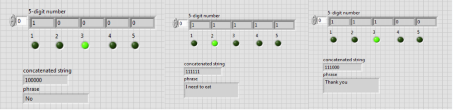

In this project, I designed a system in LabVIEW along with three other biomedical engineers that allows a subject to communicate
using solely EMG signals.
Background
Our brain communicates using electrical pulses -- from moving your hand to type on a keyboard to talking with your friend over the phone,
all of your actions are mediated through a series of electrical pulses moving from your brain to the intended limb. Using electrodes, we can
record these electrical signals and analyze them. For recording muscular activity, the resulting recording is known as an electromyogram (EMG).
The EMG is of particular importance in clinical settings because it can help doctors diagnose certain diseases. If you have ever experienced
muscle weakness, pain, or numbness, your doctor may have conducted a test to check if you have a problem with your nerves, spinal cord, or muscles.
However, the EMG can also be of use to us in engineering systems for patients to use. Since EMG recordings are controllable, a potential application
for the signal is communication
Biosignal-based communication is something that is currently studied extensively. EEG-based systems are used in patients in a locked-in state
(can't move or talk) to predict intent in what are known as P300 systems. EMG systems are used less extensively, as the population that requires
these systems have typically lost motor function. If they have not, typing is infinitely easier.
Nonetheless, the goal of this project is to design a system such that we can use EMG to communicate, as we did not have the equipment
necessary for an EEG-based system.
The system must:
1. Communicate using a list of 20 phrases
2. Use only EMG signals
3. Be designed using LabVIEW
System performance will be evaluated using a performance index (PI), where PI = number of phrases successfully selected per minute - number of electrodes attached.
System Design
The figure above give a very high level overview of the system design. The overall idea for this system was to convert the EMG signal into a binary output:
if a clench is detected the system will output a 0, if not the system will output a 1. We will then store these values into an array and assign different
combinations to different phrase; for ex. a code of 10111 will be one phrase while a code of 00000 will be another..
Individual System Components
Data Acquisition
Data is acquired from the subject's forearm (three electrodes) at a 5k sampling rate and 2.5k samples to write using the DAQ block and
then filtered using a bandpass filter from 0-500Hz. Though the frequency of EMG may extend far beyond this, most of the "usable" energy
falls within this range. The signal is then converted into a numeric array using the dynamic data conversion block. Then, using a peak detector
block, the maximum of these values is taken. This is then put into a makeshift comparator that compares this value to a threshold value, in this
case 0.5 volts, and outputs a 0 or 1 depending on whether the recorded value is below or above this threshold.
At a high level, what we are doing is analyzing the EMG signal every time we record it and taking the maximum value. Then, we compare that maximum
value to a threshold; if the value is below the threshold we output a 0, if it is above we output a 1. Basically what this does is detect whether or
not a clench was actually completed.
Now we put this entire sequence into what is known as a shift register. Shift registers have the ability to run this sequence and store the value of
the previous iteration. We use this to be able to store values into an array. We set this to run five times so we can have a five digit code at the end.
Array Conversion
Okay so now that we have our binary system, we want to put our values into an array. The array is initialized with the first value of the clench
and we put more values in there until we reach our five sample limit. Then we have a converter that converts the number array into a decimal string.
That string is combined using what is known as the concatenated string block, which combines all the values that we have into a five digit string.
Then, we put our array into a MathScript node and assign phrases.
What this is doing is putting our values into an array one by one, converting it into a number format that our program can understand, and then
putting it together. Then we take that string and assign it to each phrase.
LED Control
When we were testing the system we realized it was really hard to track what sample of the five-digit code you were on, so we decided to add
some LEDs to help the user track what position the system was in. Basically we just added five LEDs, and made one turn on/off depending on how
fast we were sampling the signal (in this case, it was 500 milliseconds).
System Performance

Our test subject was able to complete about 19 phrases in a minute, so approximately one every 3 or so seconds. With three electrodes, that results
in a performance index of 16.
As always, there are some benefits and limitations to the system. The good thing is not a lot of effort is exerted in each clench; we made the threshold
low enough such that it wouldn't register noise as a clench but also that you wouldn't have to clench super hard to get it registered. And because we had
a five digit code, we had the ability to complete 32 phrases (2^5), much more than the 20 phrase requirement.
One limitation is that a large amount of clenches is needed for multiple phrases to be expressed. Also, the user has to wait after the array is completed
before the input of a new array (meaning if there was a mistake, we have to wait a few seconds for the system to restart). There's also a trade-off in how
fast we want the system to run and the training period of the subject. If we make the sampling period between each sample large, we reduce the performance
of the system (how many phrases we can complete per minute), but we also significantly reduce training time for the subject. If we make the sampling period
too short, we increase performance, but the system requires a significant training period.
Thank you to my collaborators in this project: Aakash Trivedi, Monica Sharobeam, and Lincy Philip, as well as Dr. Xuefeng Wei from The College of New Jersey.